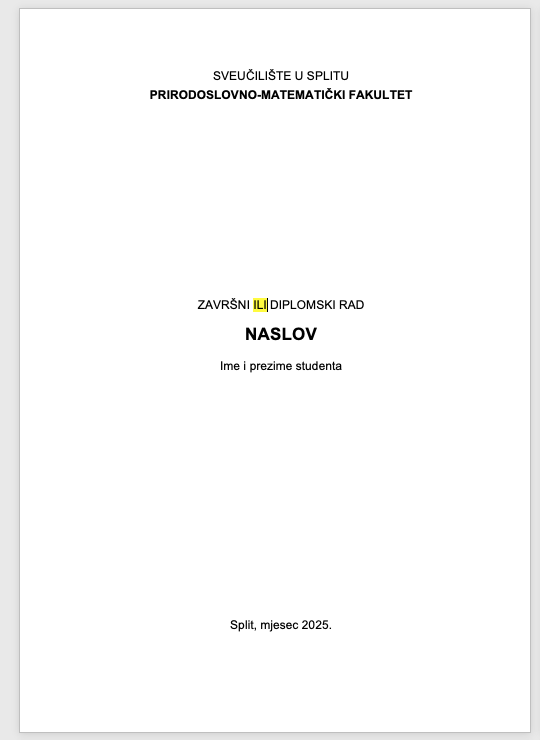

Pravilnik o studiju i studiranju na prijediplomskim i diplomskim studijima...
VII. ZAVRŠETAK STUDIJA
Završni odnosno diplomski rad je samostalan rad u kojem student pod mentorstvom koristeći praktična i teorijska znanja stečena tijekom studija, uz samostalno korištenje i pravilno navođenje znanstvene i stručne literature obrađuje zadanu temu u skladu sa zahtjevima struke koristeći odgovarajuću znanstvenu metodologiju, prezentira svoj rad i sudjeluje u raspravi o obrađenoj temi.
Naslov teme završnog/diplomskog rada mentor i komentor u dogovoru sa studentom mogu izmijeniti najkasnije do prihvaćanja radne verzije rada. Izmjena se vrši ponovnom prijavom teme rada!
Kod prijave teme rada, naslov teme završnog/diplomskog rada se ne smije pisati velikim slovima.
Naslov u predanom završnom/diplomskom radu se ne smije razlikovati od prijavljenog naslova.
Čl. 52. st. 5.
Završni odnosno diplomski rad mora sadržavati:
Naslovnicu
Temeljnu dokumentacijsku karticu na hrvatskom i engleskom jeziku
Izjavu o samostalnoj izradi rada
Uvod
Razradu teme
Zaključak
Literaturu i druge korištene izvore.
Potrebno je pripremiti elektroničku verziju rada za objavu online.
Sve stranice osim naslovnice, zaključno sa sadržajem označavaju se rimskim brojevima.
Ostali dijelovi dokumenta
Ako koristite MS Word, preporuka je koristiti stilove te automatsko generiranje tablice sadržaja.
Uvod
Naslov "Uvod" se ne numerira (na naslov Uvod primijenite stil Heading 1, a zatim ručno maknite brojčanu oznaku ispred teksta Uvod)
Broj stranica počinje od uvoda stranicom 1.
Mora biti naveden u sadržaju i mora biti navedeno na kojoj se stranici nalazi.
Poglavlja
Naslov prvog poglavlja (Heading 1) numerira se brojem 1. (npr. 1. Osnovne arhitekture mreža)
Naslov prvog potpoglavlja (Heading 2) numerira se brojem 1.1. (npr. 1.1. Lokalna mreža)
Naslov sljedeće razine (Heading 3) numerira se brojem 1.1.1. (npr. 1.1.1. HTML)
...
U sadržaj ulaze naslovi (poglavlja i potpoglavlja) do Heading 3.
Zaključak
Zaključak je obavezan dio rada
Naslov Zaključak se ne numerira kao poglavlja, odnosno piše se samo Zaključak bez broja ispred
Naslov Zaključak mora biti naveden u sadržaju s brojem stranice na kojoj se nalazi
Literatura
Literatura je obavezan dio rada
Naslov Literatura se ne numerira kao poglavlja, odnosno piše se samo Literatura bez broja ispred
Naslov Literatura mora biti naveden u sadržaju s brojem stranice na kojoj se nalazi
Sve stranice literature moraju imati brojeve stranica, kao i glavni dio rada (nastavljaju se na prethodne brojeve)
Skraćenice
Nisu obavezne, a ako ih ima onda se nalaze nakon literature
Naslov Skraćenice se ne numerira, odnosno piše se samo Skraćenice bez broja ispred
Naslov Skraćenice mora biti naveden u sadržaju s brojem stranice na kojoj se nalazi
Privitak
Privitak nije obavezan dio rada, a ako imate priloge, nalaze se na kraju
Naslov Privitak se ne numerira
Naslov Privitak mora biti naveden u sadržaju s brojem stranice na kojoj se nalazi
Sve stranice privitka također moraju imati brojeve stranica kao i glavni dio rada (nastavljaju se na prethodne brojeve)
U radu postoji samo jedna naslovna stranica oblika kao na slici:

TEMELJNA DOKUMENTACIJSKA KARTICA (TDK) piše se na jednoj stranici (ako je moguće), a sadrži:
Naziv fakulteta (kao na naslovnoj stranici),
Oznaku vrste rada – Diplomski rad/završni rad,
Naslov diplomskog/završnog rada,
Ime i prezime studenta/ice
Sažetak rada - napisan jasno tako da se razumije cilj rada i osnovni problem koji je istražen; navesti osnovne metode rada i objekt istraživanja; sažeto iznijeti glavne rezultate i zaključak rada. Sažetak se piše u jednom odlomku i ne smije biti duži od 150 riječi.
Ključne riječi navesti ispod i ne ponavljati riječi iz naslova rada,
Podatke o radu (broj stranica označenih rimskim brojevima, broj stranica rada, broj slika i tablica, broj literaturnih navoda, jezik izvornika).
Ime mentora, komentora (ako ih je bilo), imena i prezimena članova povjerenstva za obranu rada. Mentor/komentor su dio Povjerenstva za ocjenu te je popisu povjerenstva potrebno navesti sve članove iako je mentor/komentor već naveden ranije.
Ako je diplomski ili završni rad izrađen u sklopu projekta, potrebno je to navesti na posebnoj stranici između TDK i izjave o samostalnoj izradi rada. Predložak možete preuzeti na poveznici:
U tablici su nazivi na engleskom jeziku za pojmove koji se mogu pojaviti u temeljnoj dokumentacijskoj kartici:
Hrvatski
Engleski
Poslijedoktorand
Postdoctoral researcher
Mentor
Thesis supervisor
Komentor
Co-supervisor
Asistent
Instructor
Viši asistent
Senior instructor
Predavač
Lecturer
Viši predavač
Senior lecturer
Titule i kratice
Prije imena i prezimena članova povjerenstva na hrvatskom jeziku napisati kraticu, a na engleskom iza. Npr. ako je mentor Pero Perić docent potrebno je napisati:
doc. dr. sc. Pero Perić
Pero Perić, PhD, Assistant Professor ili Pero Perić, PhD, Asst. Prof.